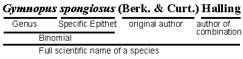

Scientific names
Scientific names are the official names that follow published naming rules (codes of nomenclature, see Taxonomy) that uniquely identify a specific organism or a group of related organisms, such as a genus or family (e.g. the genus Ulmus and the family Ulmaceae). The scientific names for genera, species, subspecies, varieties, and formas are always Latinized words, and thus always appear in italics (or underlined). Family names and other ranks above genus are not italicized but rather identified by their ending. Family names end with "-aceae".
The Binomial
Names for species are always a combination of two Latinized words, called a binomial (meaning two names). The first part of a binomial is the genus name, and it is always capitalized. The second part of the species binomial is called the specific epithet or species epithet, and it is never capitalized (e.g. the scientific name for the American elm is Ulmus americana). Epithets based on proper names were previously capitalized but that practice ended. It is customary to shorten the genus name of the binomial to the first letter (still capitalized) followed by a period when the genus can be clearly presumed based on the appearance of the full genus name earlier in the sentence or paragraph. For example, Ulmus americana, U. rubra, and U. thomasi are all in the genus Ulmus.
Subspecific epithets
Taxonomic levels (or ranks) below species are, in descending order, subspecies (subsp. or ssp.), variety (var.), and forma (f.). When used, these are always added after the species name, but with the level specified, for example, Campanula aparinoides ssp. uliginosa. Note that subsp., var., and f. are not put in italics (or underlined).
Authors
In order to be completely clear about the scientific name of a species or lower level taxon, the author — the name(s) or standard abbreviation(s) of the person(s) who first published that name combination — should also be added after the end of the epithet, for example Rhus copalina L., or R. copalina var. latifolia Engl.
When a taxon name is moved to a different genus, the specific epithet is transferred to that new genus. The original taxon author(s) is placed in parentheses and the author(s) making the new combination is placed after that. For example, in 1849 Berkeley and Curtis described a small tan mushroom with a spongy stem base. The name history for this species is as follows. The first three names are synonyms of the fourth name Gymnopus spongiosus, which is the currently accepted name.
- Marasmius spongiosus — 1849, the species is first described and published.
- Marasmius semisquarrosus — 1878, a new species is published, but later it is decided that this represents the same species as M. spongiosus. The name that was published first (in this case 1849 for M. spongiosus) takes precedence over any names described later.
- Collybia spongiosa — 1949, Rolf Singer moves the species to the genus Collybia.
- Gymnopus spongiosus — 1996, after the genus Collybia is split apart, Roy Halling transfers the mushroom again.
....
....
Information provided on this page applies to the Chicago Region and may not be relevant or complete for other regions.
Footer Menu
Funded by Institute of Museum and Library Services (IMLS)
Citation: The vPlants Project. vPlants: A Virtual Herbarium of the Chicago Region. http://www.vplants.org
Copyright © 2001–2009 The vPlants Project, All Rights Reserved.
The Morton Arboretum, The Field Museum, Chicago Botanic Garden, Additional Partners